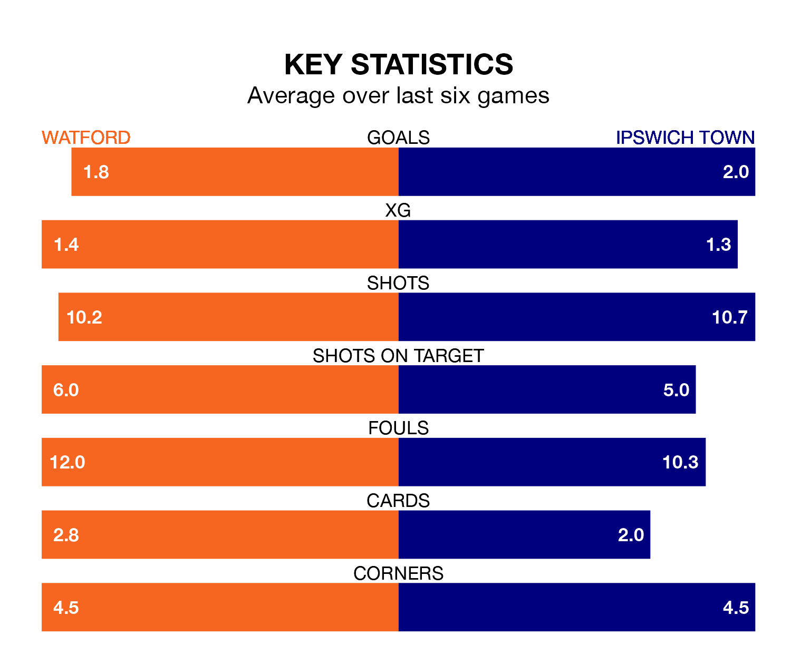

Ipswich Town visit Watford at Vicarage Road on late Tuesday on the back of three consecutive wins in the Championship.
Ipswich have picked up 13 points from their last six games, and they face a Hornets side who drew their last match, and have collected 11 points from the last possible 18.
With 43 goals in 20 games so far this season, Ipswich are the league's highest scorers with 2.1 goals per game. And they are conceding fewer than average, letting in 25 goals at a rate of 1.2 per game.
Watford, meanwhile, are average scorers, with 1.4 goals per game. They have conceded 1.2 goals per game.
Town are second in the table after 20 games, of which they have won 15 and drawn three, earning 48 points.
The Hornets are eight places behind the Blues in 10th, with seven wins and seven draws putting them on 28 points.
In Václav Hladký, the away side can rely on one of the league's safest pair of hands. He has kept seven clean sheets in his 20 appearances this season, and only one other 'keeper – West Bromwich Albion's Alex Palmer – has been able to prevent the opposition scoring on more occasions in the Championship.
In the hosts' net, Daniel Bachmann has six clean sheets in 16 games. He has conceded a goal every 76 minutes, 10% more often than the 86 minutes between goals for Hladký.
Watford's last match was on Saturday, a 1-1 draw against Southampton, with Rhys Healey getting the goal for the Hornets.
Ipswich beat Middlesbrough 2-0 last time out, also on Saturday, with Conor Chaplin and Omari Giraud-Hutchinson on the scoresheet.
Tuesday's match will be refereed by David Coote, who has taken charge of two Championship games so far this season, issuing no red cards and booking 11 players. He has awarded one penalty.
He is yet to oversee a match featuring either Watford or Ipswich this season.
